GreekWineClub
GreekWineClub was a subscription box project I co-founded alongside MonthlyFlavors, with a focus on premium Greek wines. The mission was simple yet ambitious: to connect wine lovers across Europe with Greece’s best wineries, curated by professional sommeliers, and delivered directly to their homes.
Tasks
- Research
- UX UI design
Product design - Marketing assets
- Email design
- Social media posts
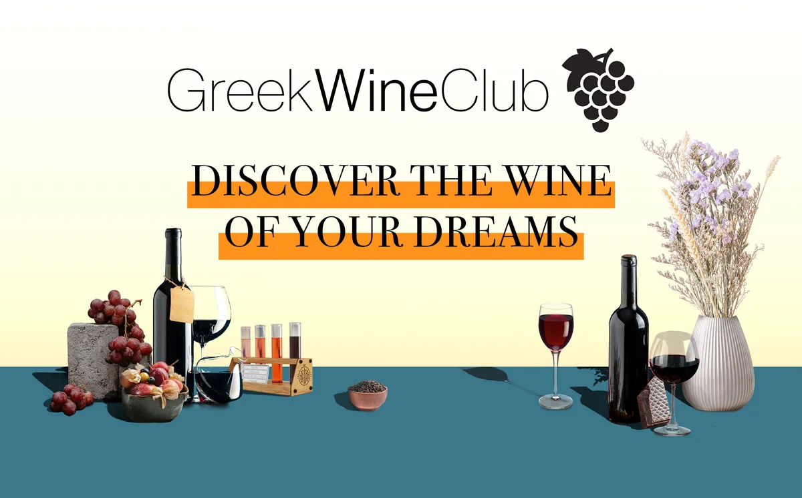
Overview
Unlike traditional e-commerce wine shops, GreekWineClub was designed as an experience-first subscription. It combined curated wine selections, storytelling, and brand identity into a single seamless journey. From the moment a user visited the website, the design had to convey exclusivity, authenticity, and trust while still feeling approachable.
My role spanned UX/UI design, product strategy, e-shop development, content creation, photography, and automation workflows. This project challenged me to merge design with business and technical execution, ensuring that every detail — from the first click on the website to the moment of unboxing — felt premium and seamless.


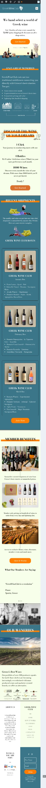


Scrollable mockup


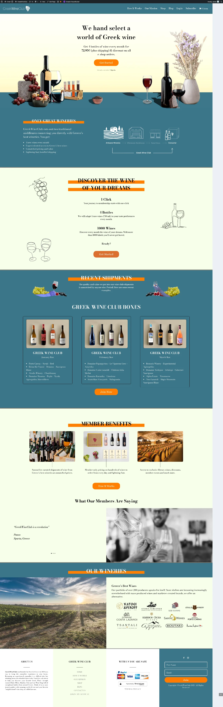


Web Design Elements & Color Choices
The design direction was heavily inspired by the wine culture and Mediterranean lifestyle.
Primary palette: deep teal and blue tones reflected both the elegance of fine wine and the trustworthiness of Greek tradition.
Accent color: a vibrant orange was chosen to highlight CTAs (“Join Now,” “Get Started”). It stands out against the darker palette and guides the user’s eye towards conversions.
Neutral base: “white wine” backgrounds provided clarity and breathing room, ensuring that wine bottles and lifestyle photography were the heroes of the layout.
This palette created a balance between premium sophistication and modern usability, with strong accessibility contrast for readability.
Typography followed a clean, editorial style: a serif for headings to evoke tradition, paired with a modern sans serif for body text, ensuring legibility across devices.
How It Works / Subscription
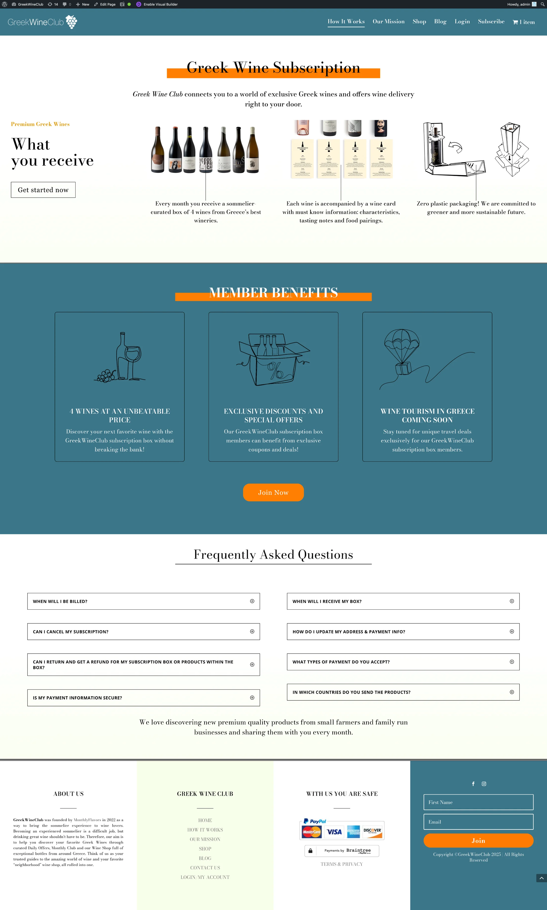
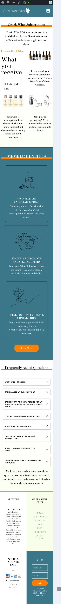
Scrollable mockup
I intentionally structured the page to lead with clarity. The first section introduces the subscription with a direct, benefit-driven explanation of what users receive, supported by product imagery. At this point, the goal is to give visitors a clear and immediate understanding of the value proposition.
To support this, I added a subtle call-to-action (“Get started now”)—not overly aggressive, so users can explore without pressure, but still nudged toward conversion.
Next, the Member Benefits are presented as a secondary persuasion layer for those who weren’t convinced by the initial CTA. I used minimal line illustrations and bold, concise benefit statements to communicate value quickly and visually. The layout is clean, with enough white space to avoid distraction while keeping the focus on the benefits.
Finally, the page closes with a strong, high-contrast CTA (“Join Now”). Unlike the first button, this is visually bold with an orange background, creating a sense of urgency and action. The shorter, punchier copy encourages immediate commitment: “Don’t waste any time”.
This design flow ensures that users first understand, then evaluate benefits, and finally are pushed toward a decisive conversion action.
Our Mission
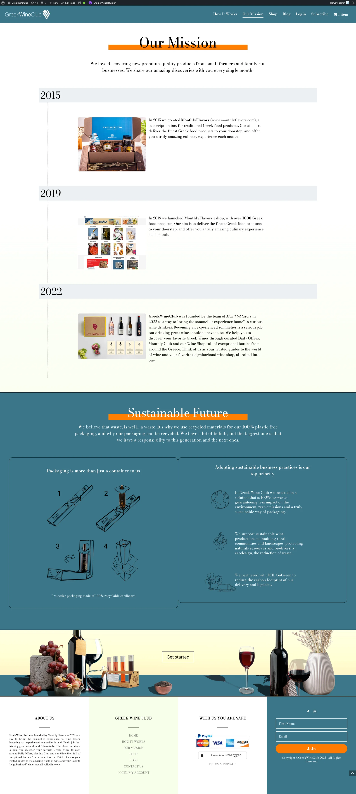
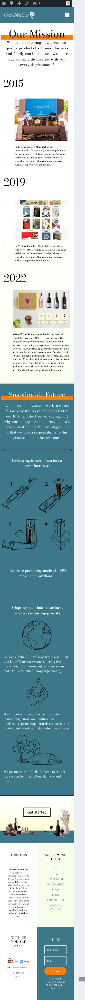
Scrollable mockup
Challenge
When designing the Our Mission page, I needed to tell a story — not just present facts. The goal was to connect visitors emotionally to GreekWineClub’s history and values while keeping the page visually clean and easy to scan.
Approach
I used a timeline layout (2015 → 2019 → 2022) to highlight key milestones. Each section pairs imagery with concise copy, making it simple for users to follow the evolution of the brand.
To reinforce brand identity, I kept the teal and cream palette consistent with the rest of the site and added subtle accents for hierarchy.
To avoid heavy reading blocks, I transformed dense text into short highlights (goal, milestone, outcome). This created a narrative flow without overwhelming users.
Sustainability Section
This part was crucial for credibility. I designed it with two clear columns:
Left side: a step-by-step graphic explaining our eco-packaging process.
Right side: commitments like “100% recycled cardboard” and “CO₂-neutral shipping.”
Each step is paired with an icon for scannability, and the clean structure makes sustainability a tangible part of the story, not just a claim.
Outcome
The final page reads as a brand story + proof of values, balancing storytelling with trust signals. It gives potential subscribers a reason to connect emotionally and practically with the brand.
GreekWineClub Subscription Product and eShop
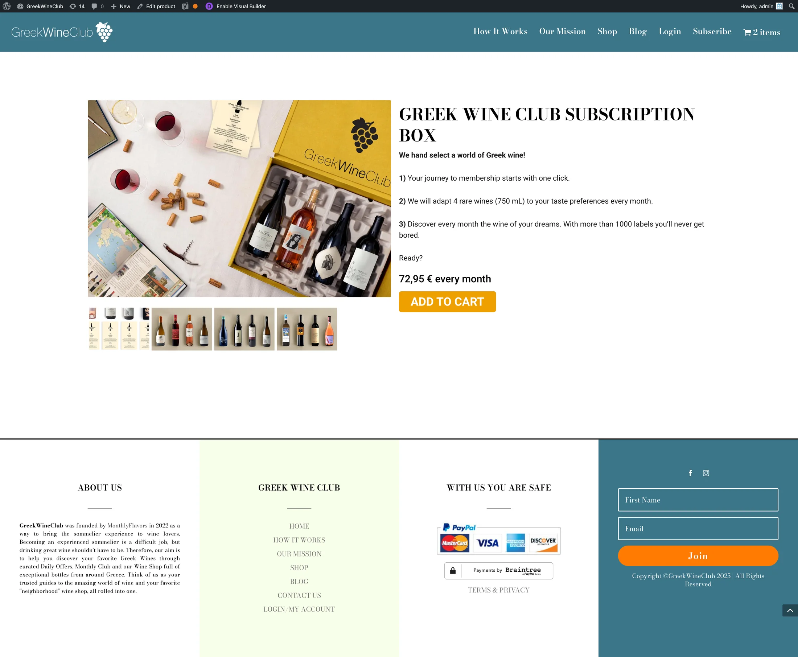
A core component of the project was creating a fully functional subscription eShop.
The website allowed users to:
- Subscribe to the monthly box.
- Manage deliveries and wine preferences.
- Access additional product details and pairing recommendations.
The system was built with flexibility in mind, ensuring that both one-time purchases and recurring subscriptions could be managed with minimal friction. Visual consistency was applied across all product pages, reinforcing the curated nature of the service.
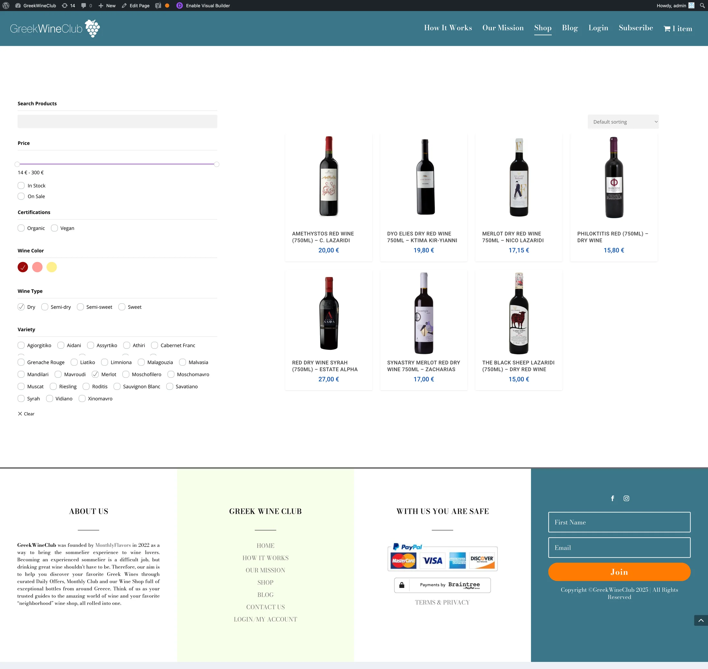
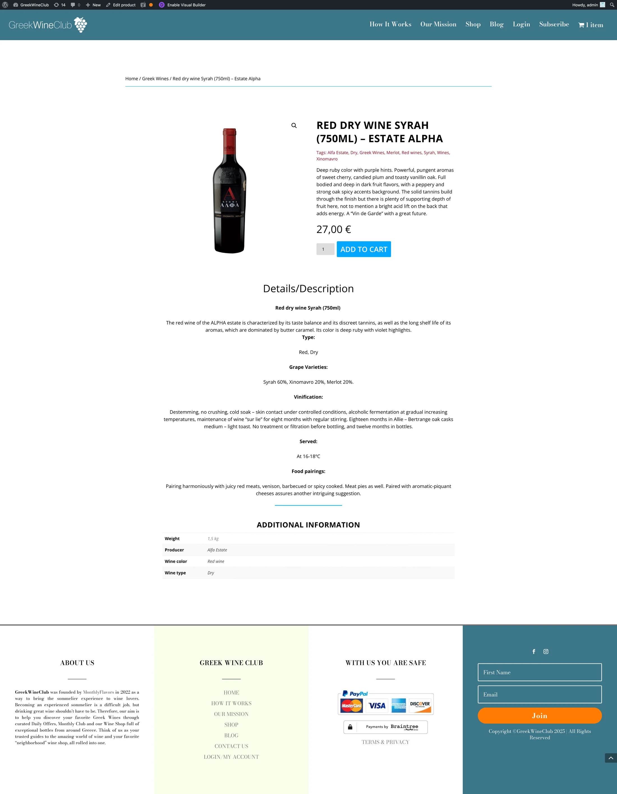
Wine Shop – Conditional Filtering & Search
For the Greek Wine Club eShop, I designed an advanced filtering system that makes exploring over 1,000+ wines intuitive and enjoyable.
- Multi-level filtering: Users can refine their search by price, availability (in stock/on sale), certifications (organic/vegan), wine color, sweetness level, and grape variety.
- Tailored discovery: This system allows for highly specific combinations (e.g., White Wine + Assyrtiko + Semi-dry + Organic), making the experience closer to a professional sommelier’s recommendation.
- Effortless navigation: Filters are positioned on the left for desktop and collapse elegantly on mobile, keeping the browsing area focused on wine results.
- Sorting and clarity: Default sorting can be customized (by price, popularity, etc.), while clean wine cards with bottle images, names, and prices ensure quick scanning.
UX goal: Reduce friction for both casual shoppers who want something simple (like “red, under €20”) and enthusiasts who want precise control over their selection.
This filtering experience transforms the shop into a personalized wine discovery tool, aligning with the brand’s mission of “bringing the sommelier experience home.”
Packaging & Unboxing Experience
The physical product was just as important as the digital journey. Packaging was designed using eco-friendly cardboard to protect the bottles during transport while also creating a premium unboxing experience. The clean, elegant design reinforced the brand’s identity, making every delivery feel like opening a gift.
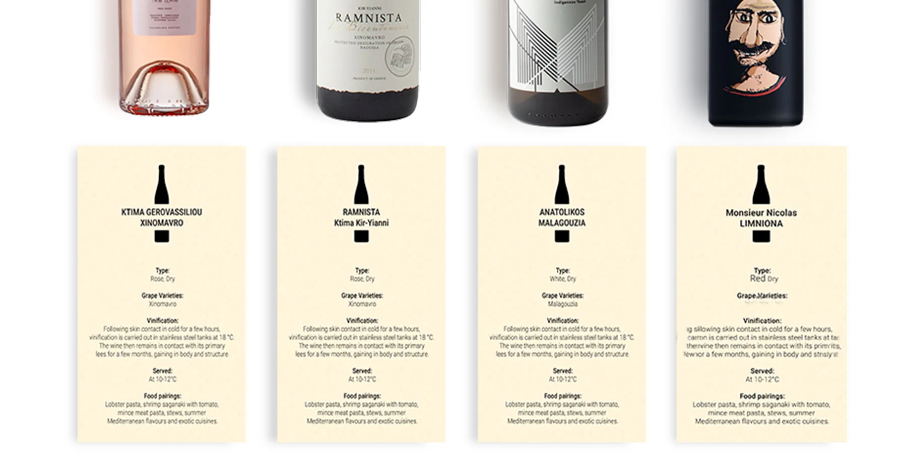
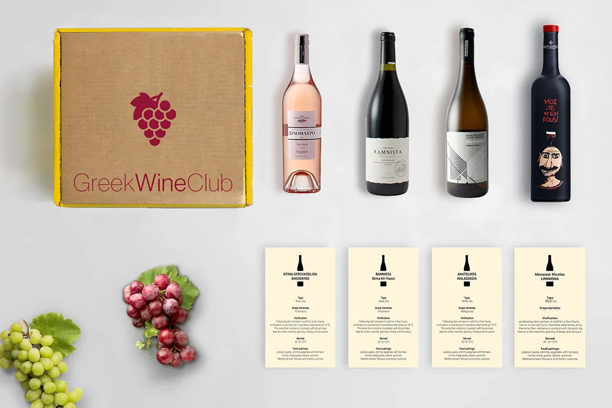
Wine Cards
Each bottle was accompanied by a custom-designed wine card to educate and engage subscribers. The cards included:
- Wine name & winery
- Region of origin
- Grape variety
- Alcohol percentage & vintage
- Tasting notes (aroma, palate, finish)
- Food pairings curated by sommeliers
- Serving recommendations (temperature, glassware)
- Iconography for quick readability
Printed on thick matte stock, the cards became collectible items, adding value beyond the product and encouraging subscribers to build knowledge over time.

Automated Payments & Workflow Integration
To streamline operations and provide a seamless customer experience, I designed and implemented an automated payment and data flow using Stripe and Zapier. This ensured that transactions were secure, customer data was organized, and notifications were instant.
- Stripe integration: Enabled secure subscriptions and one-time payments with full compliance.
- Zapier automations: Connected order data to Google Sheets for real-time tracking and reporting.
- Team notifications: Automatic Slack alerts ensured the team stayed updated on every purchase.
- Operational efficiency: Reduced manual work, minimized errors, and scaled smoothly with demand.
This system turned the backend into a self-running workflow, where every order triggered a chain of automated tasks — from payment confirmation to internal reporting — keeping the focus on customer experience and growth.
Closing Reflections
GreekWineClub was more than just a design project—it was a natural extension of my decade-long journey with MonthlyFlavors. Having spent over 10 years curating and sharing the best of Greek gastronomy with audiences across Europe, this project allowed me to channel that experience into the world of premium wines.
It combined everything I value as a designer and entrepreneur: storytelling, user-centered design, and seamless technology integration. From crafting digital experiences to shaping the brand’s identity and building automated systems, GreekWineClub became a showcase of how design can bridge culture, tradition, and modern e-commerce.